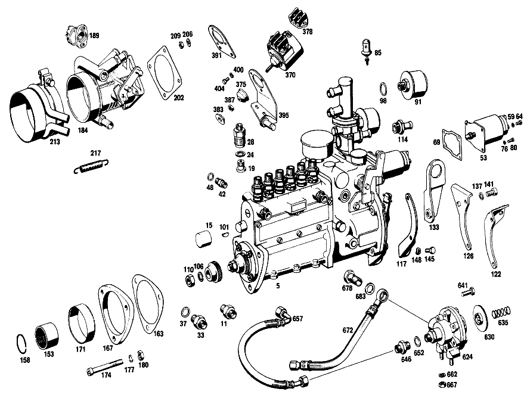

| № | Артикул | Название | Кол. | Примечание | Ограничение |
|---|---|---|---|---|---|
| 5 | A 130 070 00 01 | ТНВД | - | ||
| 11 | A 000 074 22 84 | - КЛАПАН | 1 | ||
| 15 | A 000 997 33 35 | - ЗАГЛУШКА | 1 | ||
| 16 | A 000 074 10 29 | - ТОЛКАТЕЛЬ | 6 | [402] БОЛЬШЕ НЕ ПОСТАВЛЯЕТСЯ [045] TO 130 070 19 01,130 070 20 01 | |
| 17 | A 001 074 11 93 | - ПРУЖИНА | 6 | [045] TO 130 070 19 01,130 070 20 01 | |
| 18 | A 000 074 11 32 | - ВТУЛКА | 6 | [045] TO 130 070 19 01,130 070 20 01 | |
| 18E | A 000 074 89 22 | - ПАРА ПЛУНЖЕРНАЯ | 6 | [045] TO 130 070 19 01,130 070 20 01 | |
| 19 | A 000 074 17 15 | - КЛАПАН НАПОРНЫЙ | 6 | ||
| 24 | A 001 997 30 40 | - Уплотнительное кольцо | 6 | ||
| 28 | A 000 078 13 69 | - РЕЗЬБ. ШТУЦЕР | 6 | ||
| 29 | A 000 074 23 26 | - ТЯГА РЕГУЛЯТОРА | 1 | [045] TO 130 070 19 01,130 070 20 01 | |
| 31 | A 000 074 43 86 | - РЕЗЬБ. ШТУЦЕР | 1 | [045] TO 130 070 19 01,130 070 20 01 | |
| 32 | A 000 074 23 50 | - ВТУЛКА | 1 | [045] TO 130 070 19 01,130 070 20 01 | |
| 33 | A 000 074 18 84 | - КЛАПАН | 1 | ||
| 37 | N 007603 014100 | - Уплотнительное кольцо | 1 | 14X18\-AL | |
| 42 | A 000 074 14 86 | - РЕЗЬБ. ШТУЦЕР | 1 | ||
| 48 | N 007603 010100 | - Уплотнительное кольцо | 1 | 10X13.5 AL | |
| 53 | A 000 074 07 88 | - MAГНИТ | 1 | ||
| 59 | N 000127 004203 | - Пружинное кольцо | - | ||
| 59 | N 912004 004102 | - Пружинное кольцо | 1 | ||
| 64 | N 000084 004156 | - Винт | 1 | ||
| 69 | A 000 074 07 80 | - ПРОКЛАДКА УПЛОТНИТЕЛЬНАЯ | 1 | ||
| 76 | N 000127 005203 | - Пружинное кольцо | 4 | ||
| 80 | N 000084 005130 | - Винт | 4 | ||
| 85 | A 001 203 95 75 | - РЕГУЛЯТОР | 1 | ||
| 91 | A 000 075 11 32 | - ФИЛЬТР | 1 | ||
| 98 | N 007603 018100 | - Уплотнительное кольцо | 1 | ||
| 99 | A 000 074 33 10 | - РАСПРЕДВАЛ | 1 | [045] TO 130 070 19 01,130 070 20 01 | |
| 99F | A 003 981 18 25 | - ШАРИКОПОДШИПНИК | 1 | ПРИВОДН. ОПОРА [045] TO 130 070 19 01,130 070 20 01 | |
| 99N | A 003 981 20 25 | - ШАРИКОПОДШИПНИК | 1 | [402] БОЛЬШЕ НЕ ПОСТАВЛЯЕТСЯ [045] TO 130 070 19 01,130 070 20 01 | |
| 100 | A 000 074 08 51 | - ДИСТАНЦИОННОЕ КОЛЬЦО | 1 | ПРИВОДН. ОПОРА [045] TO 130 070 19 01,130 070 20 01 | |
| 100D | A 000 074 07 51 | - ДИСТАНЦИОННОЕ КОЛЬЦО | 1 | [045] TO 130 070 19 01,130 070 20 01 | |
| 100L | A 005 997 96 47 | - УПЛОТНИТ. КОЛЬЦО | 1 | ПРИВОДН. ОПОРА | |
| 101 | N 006888 003003 | - Сегментная шпонка | 1 | ||
| 106 | N 912004 012100 | - Пружинное кольцо | 1 | ||
| 110 | N 000936 012010 | - Гайка | - | ||
| 110 | A 094 990 57 09 | - Шестигранная гайка | 1 | ||
| 111 | A 000 074 90 80 | - ПРОКЛАДКА УПЛОТНИТЕЛЬНАЯ | 1 | СБОКУ | |
| 112 | A 000 074 16 59 | - УПЛОТНИТ. КОЛЬЦО | 1 | ВНИЗУ | |
| 114 | A 129 997 00 72 | - ШТУЦЕР | 1 | ||
| 117 | A 129 076 00 42 | - ПОДПОРКА | - | ||
| 117 | A 130 076 01 42 | - ПОДПОРКА | 1 | ||
| 122 | A 130 076 01 40 | - ДЕРЖАТЕЛЬ | 1 | ||
| 126 | A 130 076 00 42 | - ПОДПОРКА | 1 | ||
| 133 | A 130 070 00 40 | ДЕРЖАТЕЛЬ | 1 | ||
| 137 | N 000137 008204 | Пружинная шайба | - | ||
| 137 | N 000137 008212 | Пружинная шайба | 1 | ||
| 141 | N 000912 008069 | Винт | - | M8X12 | |
| 141 | A 000 984 34 29 | болт | 1 | [402] БОЛЬШЕ НЕ ПОСТАВЛЯЕТСЯ | |
| 145 | N 000933 006103 | Винт | - | ||
| 145 | N 304017 006018 | Винт с 6-гранной головкой | 1 | M6X12 | |
| 148 | N 000137 006204 | Пружинная шайба | 1 | ||
| 153 | A 621 077 00 16 | Соединительная втулка | 1 | ||
| 158 | N 009045 032000 | Пруж. стопорное кольцо | 1 | ||
| 163 | A 199 077 02 79 | ПРОКЛАДКА УПЛОТНИТЕЛЬНАЯ | 2 | ТНВД К ГОЛОВКЕ БЛОКА ЦИЛИНДРОВ | |
| 167 | A 129 074 00 81 | ФЛАНЕЦ ИЗОЛЯЦИОННЫЙ | - | ||
| 167 | A 129 074 01 81 | ФЛАНЕЦ ИЗОЛЯЦИОННЫЙ | 1 | ||
| 171 | A 129 074 00 53 | РАСПОРН. ТРУБКА | 1 | ||
| 174 | N 000912 008058 | Винт | 1 | ||
| 177 | N 000125 008418 | Шайба | - | ||
| 177 | N 000125 008443 | Шайба | 3 | 8 MM | |
| 180 | N 000934 008013 | Гайка | 3 | ||
| 184 | A 000 140 60 53 | КОРПУС ЗАСЛОНКИ | 1 | ||
| 184 | A 000 140 69 53 | КОРПУС ЗАСЛОНКИ | 1 | ||
| 189 | A 000 545 33 04 | - ВЫКЛЮЧАТЕЛЬ | 1 | Автоматическая коробка переключения передач | |
| 202 | A 127 141 01 79 | ПРОКЛАДКА УПЛОТНИТЕЛЬНАЯ | 1 | ||
| 206 | N 000125 006421 | Шайба | 3 | ||
| 206 | N 000125 006449 | Шайба | 3 | ||
| 209 | N 000934 006007 | Гайка | 4 | ||
| 213 | A 129 070 01 30 | ЭЛЕМЕНТ ПРОМЕЖУТОЧНЫЙ | 1 | ||
| 217 | A 110 993 17 10 | пружина | 1 | ||
| 221 | A 130 070 02 24 | ОПОРА ПОДШИПНИКА | 1 | ||
| 225 | N 000137 008204 | - Пружинная шайба | - | ||
| 225 | N 000137 008212 | - Пружинная шайба | 1 | ||
| 229 | A 616 072 00 74 | - Палец | 1 | [402] БОЛЬШЕ НЕ ПОСТАВЛЯЕТСЯ | |
| 238 | N 000933 006102 | Винт | - | ||
| 238 | N 304017 006016 | Винт с 6-гранной головкой | 6 | M6X16 | |
| 238 | N 914020 006009 | Винт с неспадающей шайбой | - | ||
| 238 | N 000000 000009 | Винт с неспадающей шайбой | 6 | M6X12 | |
| 243 | A 127 070 20 22 | РЫЧАГ | 1 | ||
| 249 | A 115 072 04 50 | втулка | 2 | ||
| 253 | N 006799 007007 | Стопорная шайба | 1 | ||
| 258 | A 000 070 08 67 | КОНЦЕВОЙ ДЕМПФЕР | 1 | ||
| 261 | A 129 070 02 40 | ДЕРЖАТЕЛЬ | 1 | ||
| 266 | A 000 990 96 51 | ГАЙКА | 2 | ||
| 271 | N 000933 008147 | Винт | - | ||
| 271 | N 304017 008021 | Винт с 6-гранной головкой | 2 | M8X20 | |
| 276 | A 130 070 07 40 | ДЕРЖАТЕЛЬ | 1 | ||
| 280 | A 129 995 00 20 | ХОМУТ | 1 | ||
| 284 | N 000933 005036 | Винт | 1 | ||
| 289 | N 000127 005203 | Пружинное кольцо | 1 | ||
| 293 | A 130 070 00 22 | РЫЧАГ | 1 | Коробка передач | |
| 298 | A 180 072 03 50 | - ВТУЛКА | 1 | Коробка передач | |
| 303 | A 130 070 02 21 | РЫЧАГ | 1 | Коробка передач | |
| 310 | A 180 072 03 93 | Ролик | 1 | ||
| 314 | N 006799 004001 | Стопорная шайба | 1 | ||
| 317 | N 006799 007007 | Стопорная шайба | 2 | Коробка передач | |
| 317 | N 006799 007007 | Стопорная шайба | 1 | Автоматическая коробка переключения передач | |
| 324 | N 900331 005086 | Тяга | 1 | Коробка передач | |
| 329 | N 000934 005008 | Гайка | 2 | M5 | |
| 333 | A 130 070 22 75 | ТЯГА | 1 | Автоматическая коробка переключения передач | |
| 337 | A 110 277 05 50 | - втулка | 1 | Автоматическая коробка переключения передач | |
| 341 | N 000984 005004 | - СТОПОРНОЕ КОЛЬЦО | 1 | Автоматическая коробка переключения передач | |
| 345 | A 115 300 00 86 | - Шаровой подпятник | - | Автоматическая коробка переключения передач | |
| 345 | A 000 991 88 22 | - Шаровой подпятник | 1 | Автоматическая коробка переключения передач | |
| 349 | N 000125 006407 | ШАЙБА | 1 | Автоматическая коробка переключения передач | |
| 353 | A 000 991 89 22 | ПОДПЯТНИК ШАРОВОЙ | 2 | ||
| 353 | A 000 993 04 61 | Шаровой подпятник | 2 | ||
| 357 | A 130 070 00 24 | ОПОРА ПОДШИПНИКА | 1 | Автоматическая коробка переключения передач | |
| 370 | A 000 072 05 00 | MAГНИТ | 1 | Автоматическая коробка переключения передач | |
| 375 | A 001 997 06 81 | - КАБ. ВТУЛКА | 1 | Автоматическая коробка переключения передач | |
| 378 | A 000 546 70 41 | - Кабельный соединитель | 1 | Автоматическая коробка переключения передач | |
| 383 | A 130 990 00 50 | ГАЙКА | 1 | Автоматическая коробка переключения передач | |
| 387 | N 000934 005008 | Гайка | 1 | M5 Автоматическая коробка переключения передач | |
| 391 | A 129 072 05 40 | ДЕРЖАТЕЛЬ | 1 | Автоматическая коробка переключения передач | |
| 395 | A 129 070 00 40 | ДЕРЖАТЕЛЬ | 1 | Автоматическая коробка переключения передач | |
| 400 | N 000137 004202 | Пружинная шайба | 3 | Автоматическая коробка переключения передач | |
| 404 | N 000933 004037 | БОЛТ | 3 | Автоматическая коробка переключения передач | |
| 408 | A 129 070 00 23 | ВАЛ | 1 | ||
| 413 | A 127 070 20 24 | - ОПОРА ПОДШИПНИКА | 1 | ||
| 417 | A 000 994 54 35 | - СТОПОРН. КОЛЬЦО | 1 | ||
| 422 | N 000835 006082 | - Винт | 2 | ||
| 428 | A 127 072 01 85 | - ПАЛЕЦ С ШАРОВОЙ ГОЛОВКОЙ | 2 | ||
| 433 | N 071803 008101 | - Шаровая цапфа | 2 | ||
| 436 | N 000137 005203 | - Пружинная шайба | 2 | ||
| 441 | N 000934 005008 | - Гайка | 2 | M5 | |
| 445 | A 094 990 61 07 | - Стопорная шайба | 2 | ||
| 449 | N 001481 004004 | - Распорный штифт | 2 | ||
| 455 | A 129 070 03 24 | ОПОРА ПОДШИПНИКА | 1 | ||
| 461 | A 000 994 54 35 | - СТОПОРН. КОЛЬЦО | 1 | ||
| 466 | A 127 990 01 51 | ГАЙКА | 2 | ||
| 471 | N 000933 008147 | Винт | - | ||
| 471 | N 304017 008021 | Винт с 6-гранной головкой | 2 | M8X20 | |
| 477 | N 000137 008204 | Пружинная шайба | - | ||
| 477 | N 000137 008212 | Пружинная шайба | 2 | ||
| 482 | A 127 070 38 75 | ТЯГА | 1 | ||
| 486 | N 000934 005008 | Гайка | 1 | M5 | |
| 493 | N 000934 005010 | Гайка | 1 | ||
| 499 | A 000 991 16 22 | Шаровой подпятник | - | ||
| 499 | A 000 991 89 22 | ПОДПЯТНИК ШАРОВОЙ | 1 | ||
| 499 | A 000 993 04 61 | Шаровой подпятник | 1 | ||
| 505 | A 000 991 17 22 | Шаровой подпятник | - | ||
| 505 | A 000 991 90 22 | Шаровой подпятник | 1 | ЛЕВАЯ РЕЗЬБА | |
| 571 | A 130 070 05 75 | ТЯГА | 1 | ||
| 576 | A 127 070 32 75 | ТЯГА | 1 | ||
| 582 | A 000 078 11 23 | ФОРСУНКА | 6 | ||
| 587 | N 007603 014100 | Уплотнительное кольцо | 6 | 14X18\-AL | |
| 593 | A 127 070 12 33 | ПРОВОД | 1 | ЦИЛИНДР №1 | |
| 598 | A 127 070 13 33 | ПРОВОД | 1 | ЦИЛИНДР №2 | |
| 603 | A 127 070 14 33 | ПРОВОД | 1 | ЦИЛИНДР №3 | |
| 609 | A 127 070 15 33 | ПРОВОД | 1 | ЦИЛИНДР №4 | |
| 614 | A 127 070 16 33 | ПРОВОД | 1 | ЦИЛИНДР №5 | |
| 619 | A 127 070 17 33 | ПРОВОД | 1 | ЦИЛИНДР №6 | |
| 624 | A 127 070 11 68 | ПОЛОВИНА АМОРТ.СТОЙКИ | 1 | ||
| 630 | A 127 070 00 52 | - MEMБРАНА | 1 | ||
| 635 | A 127 993 00 01 | - ПРУЖИНА | 1 | ||
| 641 | N 914005 006000 | - Винт с неспадающей шайбой | - | ||
| 641 | N 000933 006130 | - Винт | 6 | ||
| 646 | N 915006 006003 | - ШТУЦЕР ДВОЙНОЙ | 1 | ||
| 652 | A 636 997 02 44 | - Уплотнительное кольцо | 1 | ||
| 657 | A 129 997 02 82 | ШЛАНГ | 1 | ||
| 662 | N 000137 006204 | Пружинная шайба | 2 | ||
| 667 | N 000934 006007 | Гайка | 2 | ||
| 672 | A 108 476 02 26 | ШЛАНГ | 1 | ||
| 678 | N 915036 010204 | Полый болт | - | ||
| 678 | N 915036 010108 | Полый болт | 1 | ||
| 683 | N 007603 014100 | Уплотнительное кольцо | 2 | 14X18\-AL | |
| 689 | A 129 070 06 32 | ПРОВОД | 1 | ||
| 694 | A 130 070 01 32 | Топливопровод | 1 | ||
| 701 | A 129 995 00 20 | ХОМУТ | 2 | ||
| 705 | A 312 078 02 85 | Трубный кронштейн | 4 | ||
| 711 | A 617 078 00 85 | Трубный кронштейн | 6 | ||
| 715 | A 127 078 04 85 | КРОНШТЕЙН ТРУБЫ | 2 | ||
| 722 | A 127 203 03 35 | СКОБА | 1 | ||
| 728 | A 127 995 01 57 | ПЛАНКА ЗАЖИМНАЯ | 1 | ||
| 734 | A 130 070 04 40 | ДЕРЖАТЕЛЬ | 1 | ||
| 739 | N 000931 005029 | Винт | 2 | [402] БОЛЬШЕ НЕ ПОСТАВЛЯЕТСЯ | |
| 745 | N 912004 005100 | Пружинное кольцо | 2 | ||
| 749 | N 000961 012047 | Винт | 1 | ||
| 754 | N 007603 012120 | Уплотнительное кольцо | 1 | ||
| 760 | A 129 070 00 81 | ПРОВОД | 1 | ||
| 766 | A 007 997 51 82 | ШЛАНГ | 1 | ||
| 771 | A 129 070 04 40 | ДЕРЖАТЕЛЬ | 1 | ||
| 777 | N 000137 008204 | Пружинная шайба | - | ||
| 777 | N 000137 008212 | Пружинная шайба | 1 | ||
| 782 | N 000933 008131 | Винт | - | ||
| 782 | N 304017 008016 | Винт с 6-гранной головкой | 1 | M8X16 | |
| 789 | A 127 995 04 01 | хомут | 1 | ||
| 795 | N 000933 006122 | Винт | - | ||
| 795 | N 304017 006034 | Винт с 6-гранной головкой | 1 | ||
| 802 | N 000137 006204 | Пружинная шайба | 1 | ||
| A 130 070 07 01 | ТНВД | - | Рулевое управление: Вправо | ||
| A 130 070 15 01 | ТНВД | - | |||
| A 130 070 19 01 | ТНВД | 1 | |||
| A 130 076 00 42 | - ПОДПОРКА | 1 | |||
| A 000 074 22 50 | - ВТУЛКА | 2 | [045] TO 130 070 19 01,130 070 20 01 | ||
| A 002 997 38 40 | - УПЛОТНИТ. КОЛЬЦО | 1 | |||
| A 094 990 68 10 | - Пружинное кольцо | 2 | |||
| N 000084 006162 | - Винт | - | |||
| A 002 990 37 12 | - болт | - | |||
| N 000000 001149 | - Винт с 6-гр. глвк | 2 | M6X25 | ||
| A 000 074 31 52 | - Дистанционная шайба | NB | 0.10 MM [045] TO 130 070 19 01,130 070 20 01 | ||
| A 000 074 32 52 | - Дистанционная шайба | NB | 0.12 MM [045] TO 130 070 19 01,130 070 20 01 | ||
| A 000 074 33 52 | - Дистанционная шайба | NB | 0.14 MM [045] TO 130 070 19 01,130 070 20 01 | ||
| A 000 074 49 52 | - РАСПОРНАЯ ШАЙБА | NB | 0.15 MM [045] TO 130 070 19 01,130 070 20 01 | ||
| A 000 074 34 52 | - Дистанционная шайба | NB | 0.16 MM [045] TO 130 070 19 01,130 070 20 01 | ||
| A 000 074 35 52 | - Дистанционная шайба | NB | 0.18 MM [045] TO 130 070 19 01,130 070 20 01 | ||
| A 000 074 36 52 | - Дистанционная шайба | NB | 0.30 MM [402] БОЛЬШЕ НЕ ПОСТАВЛЯЕТСЯ [045] TO 130 070 19 01,130 070 20 01 | ||
| A 000 074 37 52 | - Дистанционная шайба | NB | 0.50 MM [402] БОЛЬШЕ НЕ ПОСТАВЛЯЕТСЯ [045] TO 130 070 19 01,130 070 20 01 | ||
| A 621 077 00 09 | - Поводок | 1 | |||
| A 130 076 01 42 | - ПОДПОРКА | 1 | |||
| N 000933 006102 | Винт | - | |||
| N 304017 006016 | Винт с 6-гранной головкой | 1 | ТНВД НА БЛОКЕ ЦИЛИНДРОВ; M6X16 | ||
| N 000912 008089 | Винт | 1 | ТНВД НА БЛОКЕ ЦИЛИНДРОВ | ||
| N 000137 006204 | Пружинная шайба | 1 | ТНВД НА БЛОКЕ ЦИЛИНДРОВ | ||
| N 912006 008000 | Пружинное кольцо | 1 | ТНВД НА БЛОКЕ ЦИЛИНДРОВ | ||
| A 180 203 02 36 | Соединительный штуцер | 1 | РАЗЪЕМ ОТОПЛ. НА ГБЦ | ||
| N 000084 004174 | Винт | 1 | |||
| N 000127 004203 | Пружинное кольцо | - | |||
| N 912004 004102 | Пружинное кольцо | 1 | |||
| A 000 990 35 21 | БОЛТ | 2 | Автоматическая коробка переключения передач | ||
| A 127 070 17 24 | ОПОРА ПОДШИПНИКА | - | |||
| A 198 072 03 74 | - БОЛТ | 1 | |||
| A 115 990 30 40 | Диск | 2 | СМ. ГРУППУ 01, № РИС.: 87 | ||
| A 127 070 19 22 | РЫЧАГ | - | |||
| A 130 070 01 21 | РЫЧАГ | 1 | Автоматическая коробка переключения передач | ||
| A 129 070 00 22 | РЫЧАГ | - | |||
| A 127 070 02 21 | РЫЧАГ | - | Коробка передач | ||
| A 180 072 03 50 | - ВТУЛКА | 1 | Коробка передач | ||
| A 115 072 04 50 | втулка | 4 | |||
| A 129 070 04 22 | РЫЧАГ | 1 | Автоматическая коробка переключения передач | ||
| A 130 070 01 22 | РЫЧАГ | 1 | Автоматическая коробка переключения передач | ||
| A 094 990 61 07 | Стопорная шайба | 1 | Автоматическая коробка переключения передач | ||
| N 900331 005051 | Тяга | - | Автоматическая коробка переключения передач | ||
| A 119 070 26 75 | ТЯГА | 1 | Автоматическая коробка переключения передач [402] БОЛЬШЕ НЕ ПОСТАВЛЯЕТСЯ | ||
| A 000 070 05 75 | ТЯГА | 1 | Автоматическая коробка переключения передач | ||
| N 000094 002059 | Шплинт | 1 | 2X14 MM Автоматическая коробка переключения передач | ||
| A 094 990 30 05 | Шплинт | 1 | 2,0X14 Автоматическая коробка переключения передач | ||
| A 000 991 16 22 | Шаровой подпятник | - | |||
| N 071805 008300 | - Пруж. стопорное кольцо | 2 | |||
| N 000084 004139 | Винт | 2 | |||
| A 130 070 02 23 | ВАЛ | 1 | |||
| N 000933 006102 | Винт | - | |||
| N 304017 006016 | Винт с 6-гранной головкой | 2 | M6X16 | ||
| N 071805 008300 | - Пруж. стопорное кольцо | 2 | |||
| A 000 070 06 75 | ТЯГА | 1 | |||
| N 000934 005008 | Гайка | 1 | M5 | ||
| N 000934 005010 | Гайка | 1 | |||
| A 000 991 16 22 | Шаровой подпятник | - | |||
| A 000 991 89 22 | ПОДПЯТНИК ШАРОВОЙ | 1 | |||
| A 000 993 04 61 | Шаровой подпятник | 1 | |||
| A 000 991 17 22 | Шаровой подпятник | - | |||
| A 000 991 90 22 | Шаровой подпятник | 1 | |||
| N 071805 008300 | - Пруж. стопорное кольцо | 2 | |||
| N 000934 005008 | Гайка | 1 | M5 | ||
| N 000934 005010 | Гайка | 1 | |||
| A 000 991 16 22 | Шаровой подпятник | - | |||
| A 000 991 89 22 | ПОДПЯТНИК ШАРОВОЙ | 1 | |||
| A 000 993 04 61 | Шаровой подпятник | 1 | |||
| A 000 991 17 22 | Шаровой подпятник | - | |||
| A 000 991 90 22 | Шаровой подпятник | 1 | ЛЕВАЯ РЕЗЬБА | ||
| N 071805 008300 | - Пруж. стопорное кольцо | 2 | |||
| A 108 476 05 26 | Шланг | 1 | |||
| A 130 070 02 32 | Топливопровод | 1 | |||
| N 000933 005049 | Винт | 2 | COLD STARTING CABLE TO INJECTION LINE | ||
| N 912004 005100 | Пружинное кольцо | 2 | COLD STARTING CABLE TO INJECTION LINE | ||
| N 000934 005008 | Гайка | 2 | COLD STARTING CABLE TO INJECTION LINE; M5 | ||
| N 000931 005014 | БОЛТ | 1 | |||
| N 000931 005029 | Винт | 2 | [402] БОЛЬШЕ НЕ ПОСТАВЛЯЕТСЯ | ||
| N 912004 005100 | Пружинное кольцо | 3 | |||
| N 000934 005008 | Гайка | 3 | M5 | ||
| A 127 995 01 57 | ПЛАНКА ЗАЖИМНАЯ | 1 | |||
| A 127 078 04 85 | КРОНШТЕЙН ТРУБЫ | 1 | |||
| N 916026 016001 | Хомут | - | 16\-24MM | ||
| A 005 997 01 90 | Хомут для шланга | 1 | 14\-24 MM | ||
| N 916026 016001 | Хомут | - | 16\-24MM | ||
| A 005 997 01 90 | Хомут для шланга | 1 | 14\-24 MM | ||
| A 130 070 06 40 | ДЕРЖАТЕЛЬ | 1 |
Позиций: 278 · подписано на схемах: 191 · колесо — плавный зум в курсор, перетаскивание — пан, двойной клик — зум, клик по артикулу — скопировать.